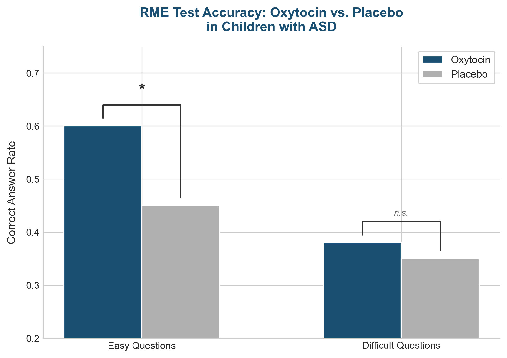

-- Oxytocin as a Potential Treatment for Autism
Aristotle famously called human beings "social (political) animals." The idea that humans are social creatures is something most of us can agree with — though the word "animal" in the phrase tends to make us just a bit uncomfortable. In The Origins of Happiness, Professor Seo-eun Guk argues that happiness is not the goal of life but rather a tool for survival. In other words, happy people are more likely than unhappy people to survive the hardships of this world. Professor Seo describes humans as "100% animals" and contrasts Aristotle's metaphysical idealism with Charles Darwin's theory of evolution. His provocative framing — Aristotle or Darwin? — stirred heated debate. But ultimately, he argues that what matters most for happiness is sharing our emotions and thoughts with others and maintaining meaningful relationships.
The "Reading the Mind in the Eyes" Test
Emotion is one of the most critical elements of our inner world. Before we are rational and logical beings, we are creatures of emotion. When we can't read our own emotions or those of others, we fall into what might be called emotional illiteracy. The American psychotherapist Claude Steiner argued early on that just as humans need the ability to read and write words, we also possess emotional literacy — the capacity to read other people's emotions. Emotional literacy is not just the ability to understand your own feelings; it's the ability to empathize with others' emotions and express them productively. Adults with strong emotional literacy don't impose their feelings on others, don't throw tantrums when their emotions aren't accommodated, and don't fall into the trap of demanding emotional comfort while refusing genuine communication. They can manage their emotions in ways that enhance inner strength and quality of life — improving relationships, mediating conflicts, creating space for affection, and fostering a sense of community belonging.[21-1]
Similarly, Karla McLaren writes in The Language of Emotions that a healthy social human being is one who can read others' emotions and communicate accordingly. McLaren argues that modern people need the social skill of honestly expressing their own emotions first, then blending them with the emotions of others. She observes that through the constant barrage of media and advertising, we've come to treat emotions as the primary culprit behind relationship problems — an unnecessary nuisance in human interaction. We've learned to treat public displays of emotion as taboo, believing we must always maintain positive emotions and keep our feelings under control, while simultaneously living as spies, constantly monitoring others' emotional states. But these myths shatter the moment we confront emotional disconnection, communication breakdown, or mental illness.[21-2]
The German poet Christian Friedrich Hebbel once said, "The eye is the point where body and soul meet." The information our eyes provide is a signal sent from the depths of the heart. The reason children with autism struggle to exchange emotions is that they cannot make eye contact. In 2001, Professor Simon Baron-Cohen developed the Reading the Mind in the Eyes Test (RME Test) as one tool for identifying autism spectrum conditions.[21-3]
Oxytocin Taught Them to Read Eyes
A fascinating study recently demonstrated that oxytocin can enhance the ability to read others' minds. Healthy adult men aged twenty-one to thirty were tested at least one week apart — once after inhaling oxytocin and once after inhaling a placebo — and then given the RME Test. Because the RME Test was originally designed for people with autism and could be too easy for neurotypical adults (a potential ceiling effect), the researchers divided the thirty-six questions into easy and difficult categories. On the easy questions, there was no significant difference between groups. But on the difficult questions, participants who had inhaled real oxytocin scored significantly higher than those who had received the placebo. In simple terms, oxytocin sharpened their emotional perception.
A study was also conducted with actual autism spectrum patients. In 2013, a research team at the University of Sydney recruited sixteen boys with autism spectrum disorder, aged twelve to nineteen, with a mental age of at least twelve. One group inhaled oxytocin while the other inhaled a placebo, and both groups then took the RME Test. As in the previous study, questions were divided by difficulty to refine the assessment. The results: the oxytocin group scored significantly higher than the control group on the test overall, with particularly large differences on the easier questions. On the more difficult questions, the difference between groups was not significant. Children with autism had begun reading emotions from facial expressions — with oxytocin's help.[21-4]
(RME Sample Test Answer: A: Insisting, B: Tentative, C: Serious, D: Cautious)
Because there is currently no definitive treatment for autism spectrum disorder, these findings created enormous excitement. Researchers have since launched studies testing oxytocin's effects across a wider range of autism spectrum patients. Among recent findings, facial recognition difficulties are closely linked to oxytocin, and oxytocin interventions have been shown to improve social relationships in individuals with high-functioning autism. These are thrilling results. However, it should be noted that this research is still in its early stages, and there are studies showing that inhaled oxytocin does not significantly improve social functioning in some autistic individuals. The relationship between oxytocin and autism remains a subject of debate. But given that genetic variations in the oxytocin receptor are associated with reduced social functioning and higher autism risk, it's hard to dismiss oxytocin's influence. As interest in adult autism grows, combining oxytocin inhalation with an oxytocin-boosting lifestyle may offer meaningful symptom improvement.[21-5]